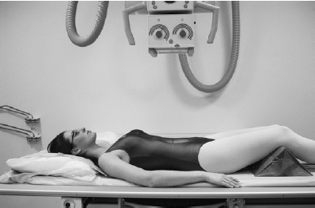

Lumbar Spine(AP)
Centering point:Larger patient - centre to iliac crest (L4-5)
Smaller patient - centre to L3 (lower costal margin) (4cm above iliac crest)

Cassette Size:35cm x 43cm (17 x 14ins) larger patient
35cm x 35cm (14 x 14ins) smaller patient
Portrait
Exposure Factors:75kVp on
35MaS
FFD:100cm
Bucky/Grid:Moving or Stationary Grid
Filter:No
Collimation:Inferior to Superior - collimate to film size
Lateral borders closely collimate (light field will appear small due to the patient being close to the X-ray tube)
Pathologies:Fractures, spondylolisthesis, bone lesions, osteoporosis, foreign bodies
Position of patient and cassette
- Patient supine on table.
- Place arms at the side or on the chest.
- Knees flexed (flexion of knees straightens the lumbar spine by reducing lordosis) opening up the intervertebral disk spaces
- Ensure no rotation of pelvis or torso
- Suspend respiration on expiration or use breathing technique